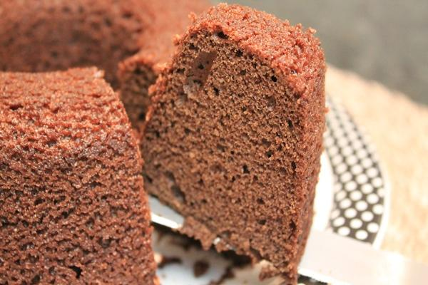

Bolo de Chocolate light

Um delicioso bolo de chocolate light para quem gosta.
Tempo de preparo: 50 minutos.
Ingredientes:
- 1 xícara (chá) de leite desnatado morno;
- 3 colheres (sopa) cheias de margarina light derretida;
- 1 xícara (chá) de nescau light;
- 1 colher (chá) de bicarbonato ou uma colher (sopa) de fermento em pó;
- 3 ovos;
- 1 xícara (chá) de açúcar light;
- 2 1/2 xícaras (chá) de farinha de trigo;
Método de preparo:
- Bata no liquidificador, a margarina e ovos.
- Acrescentar o leite, o açucar, o chocolate, a farinha de trigo e o fermento ambos peinerados.
- Bater bem.
- Colocar em forma untada.
- Levar ao forno médio, pré - aquecido, por aproximadamente 40 minutos, ou até dourar.
Voltar